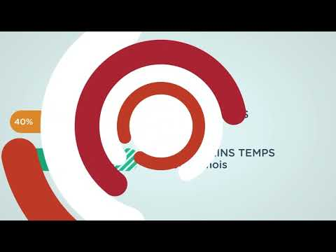
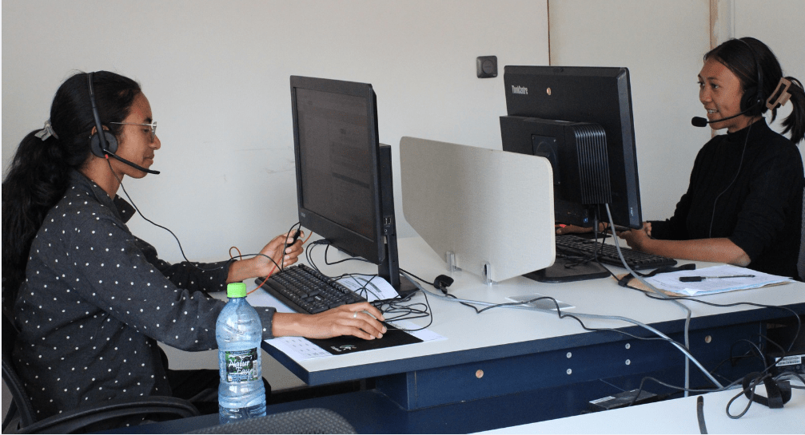
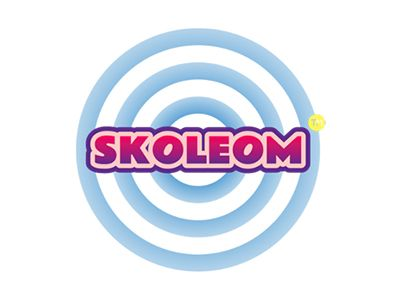
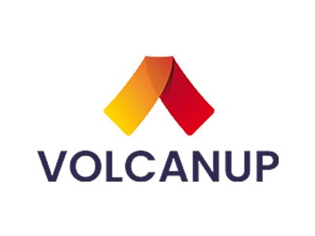
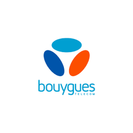
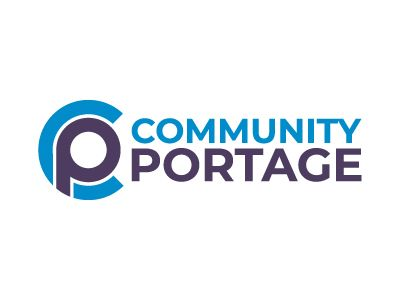

Regarder sur YouTube
01
Culture service
Des équipes formées à Antananarivo, un pilotage précis, une infrastructure sécurisée et une culture service qui transforme chaque interaction en performance mesurable.
MadaTEK réunit recrutement, formation et supervision dans un même lieu à Antananarivo. Le résultat: des équipes stables, visibles et prêtes à prendre soin de vos opérations.
Deux vidéos pour montrer l’énergie du terrain, les équipes et la culture de service derrière chaque mission.

Regarder sur YouTubeUne lecture plus simple: nous prenons en charge l’expérience client, les tâches métier, les talents et la croissance.
Appels, e-mail, tchat, réseaux sociaux, SAV et prospection.
Équipes dédiées, saisie, administration, classification et reporting.
Sourcing, recrutement, onboarding, formation et gestion administrative RH.
Lead generation, qualification de fichiers, rédaction SEO et design opérationnel.

Les équipes évoluent dans un cadre stable, encadré et formateur. Cette attention au quotidien nourrit la continuité, la précision et l’expérience client.
Des espaces de production, de formation et de repos, avec connectivité redondante et backup opérationnel.
Accès digital, surveillance vidéo, authentification multi-facteur et firewall applicatif layer 7.
Postes équipés selon mission, fibre optique, groupe électrogène et backup opérationnel.
Un échange pour clarifier mission, volumes et niveau de service attendu.
Un cadre simple: outils, indicateurs, profils, planning et responsabilités.
Validation des talents avant onboarding et formation mission.
Démarrage, suivi qualité et reporting de production.




Des demandes à traiter, un support à structurer, une équipe à constituer ? MadaTEK vous répond depuis Antananarivo.